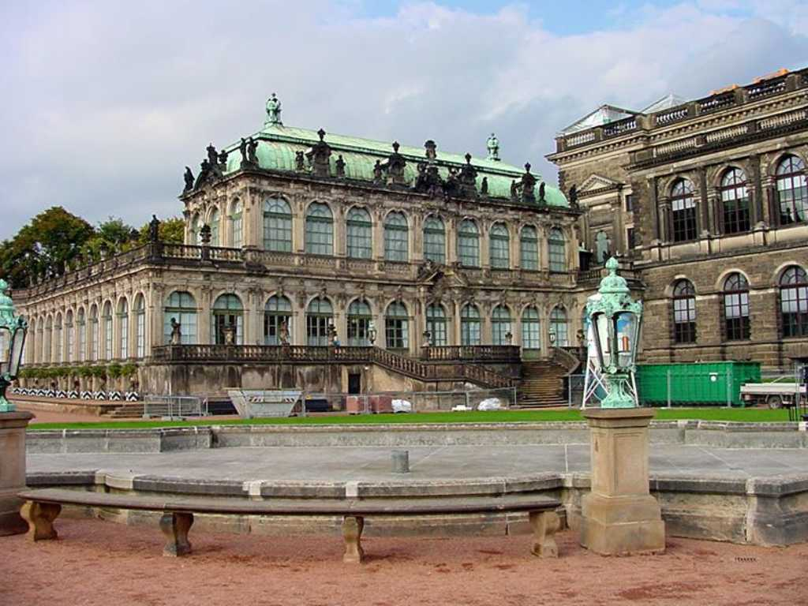
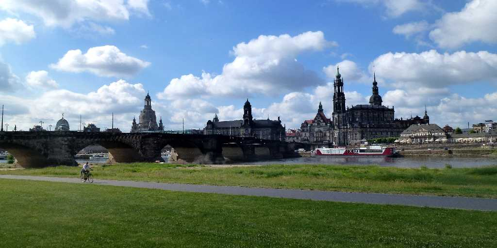
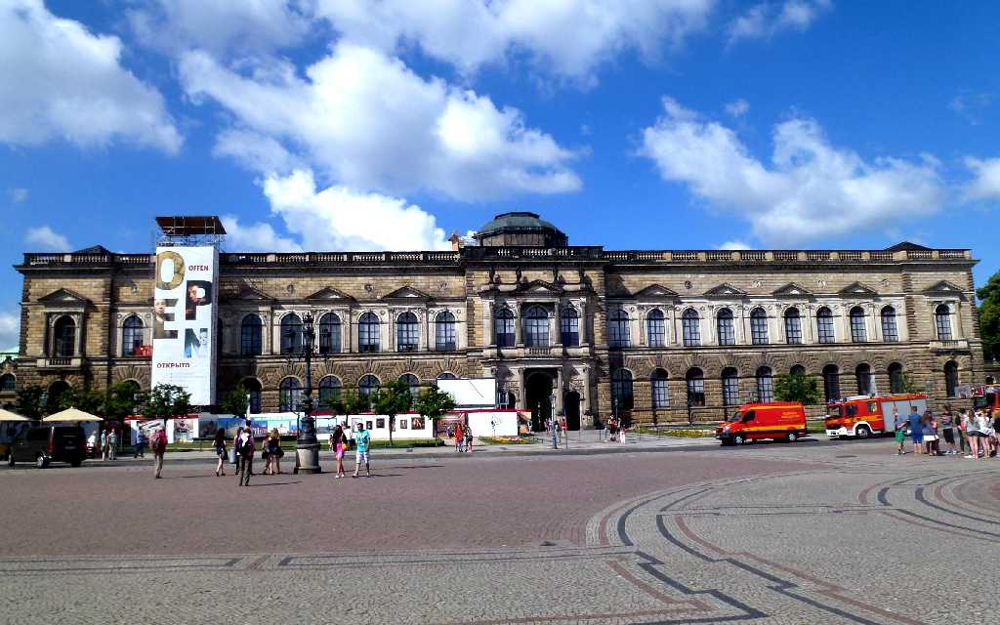
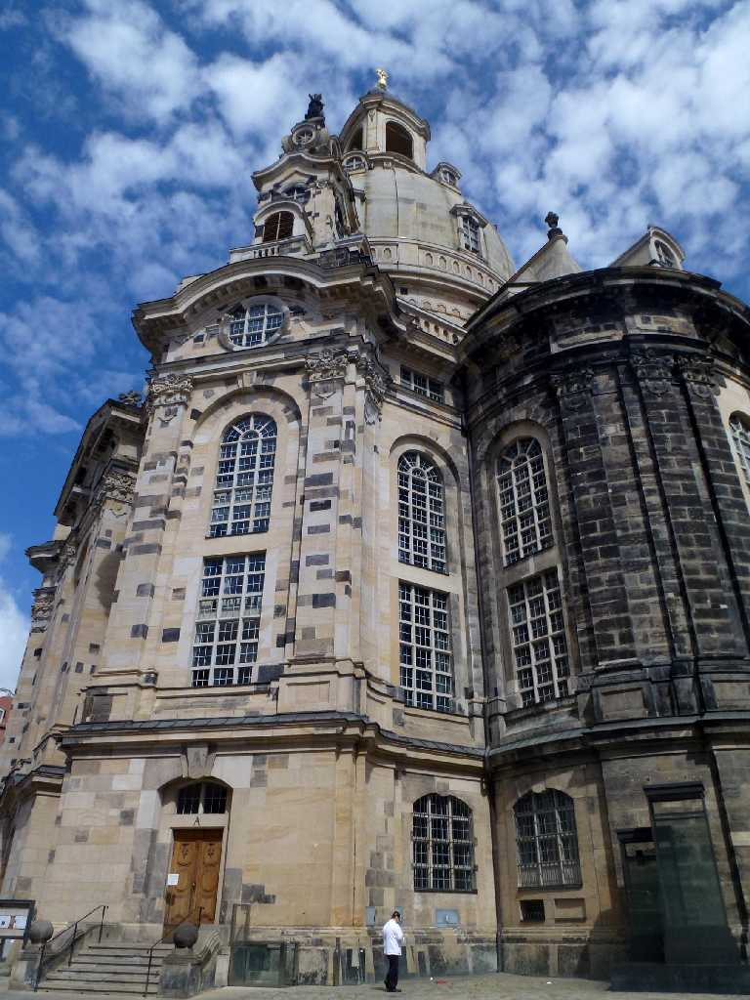
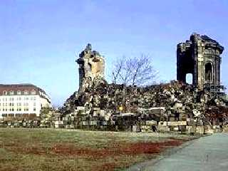
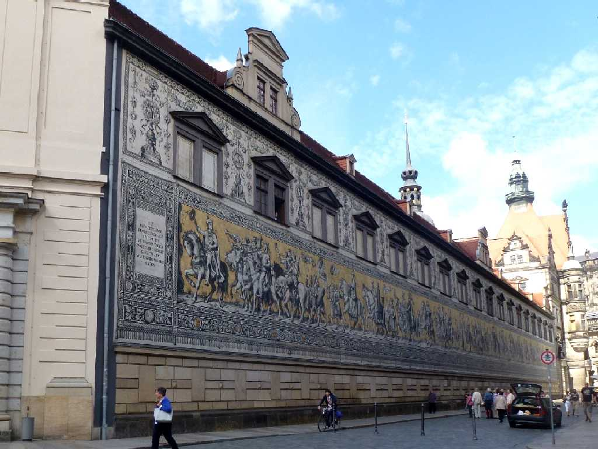
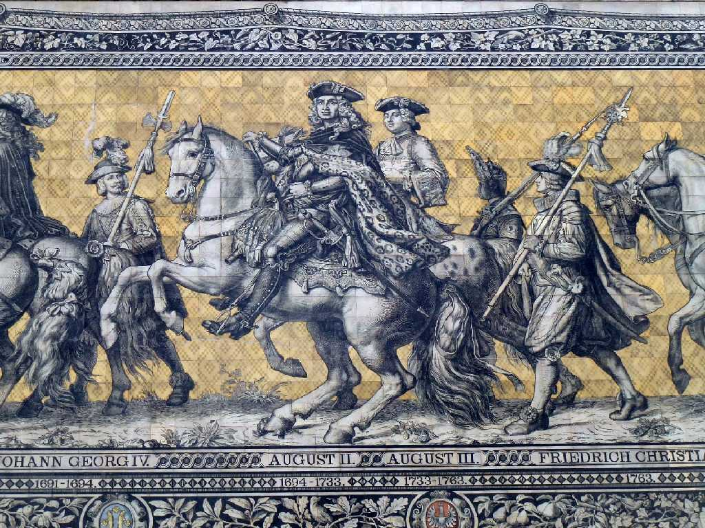

August 1989 Zwinger Schloss Dresden
ドイツ後期バロック建築の最高傑作 宮殿は１７０９年から１７３２年にかけてフリードリヒアウグスト１世によって建てられた
Green Diamond
４１ctの世界最大のグリーンダイヤモンドは剛胆王のコレクション

Elbe Dresden
約30年ぶりのドレスデン訪問でエルベ川対岸より市街を望む

Zwinger Schloss
 
Frauenkirche
約30年前の東ドイツ時代の聖母教会は戦争により破壊され瓦礫の山を観ましたが再建され色の濃い部分はあの瓦礫から当てはめたそうです
 
Bild von Fürstenzug Augustusstrasse
ドレスデン城の壁に歴代の君主を１００ｍにわたり描いたマイセン焼きの君主の行列

June 13 2014 Theaterplatz